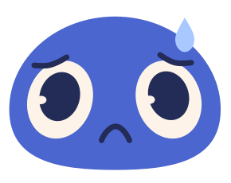
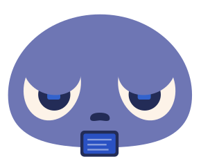
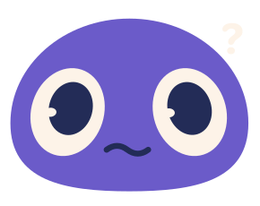
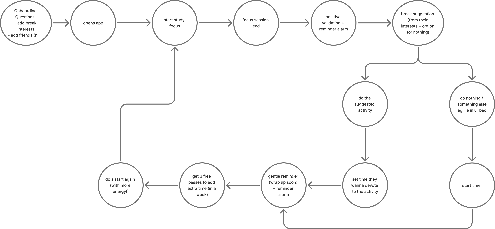

Rest guilt
Students struggled to give themselves permission to rest unless they were exhausted or had finished everything, because taking time off could make them feel behind.

Designed an app to encourage intentional, guilt-free breaks.
Last year, I participated in UBC UXHub’s yearly design sprint; in 24 hours, my teammates and I ideated, prototyped, and presented a solution to a design challenge to a panel of experienced designers. We first started off with the design challenge below.
In a world that rewards being “always on,” how might we design an experience that helps people set and keep boundaries to make recovery time feel socially safe, rewarding, and easy to sustain?
We started by exploring the problems students face when setting boundaries.
We found three recurring themes: rest guilt, low-quality rest, and difficulty transitioning.
Students struggled to give themselves permission to rest unless they were exhausted or had finished everything, because taking time off could make them feel behind.

Students often chose breaks that did not restore their energy, such as doomscrolling, because those options were the most convenient in the moment.

Hyperfocus and forgetfulness made it difficult for students to notice when it was time to move between work, breaks, and other tasks.

So we worked to solve a more specific problem:How might we help users feel comfortable stepping away from work to take breaks that genuinely restore their energy?
Each theme pointed to a different kind of support, so we mapped each theme to plausible solutions.
Make rest feel warranted through a shared focus-and-break experience
Encourage healthier, more enjoyable breaks that restore energy
Use time-blocking and reminders to assist students in switching between tasks
With several solutions in mind, my team and I headed to the drawing board to quickly iterate through user flows. We settled on something intentional and research informed; rather than creating another tool to maximize productivity, we explored how a familiar study structure could be reimagined with our findings.

Before prototyping our solution, we identified two main design philosophies we could abide by. Each could have benefits, but each carried different tradeoffs.
This assumes self-control is a finite, depletable resource, so the product should step in and make the decision for the user.
This protects agency, but relies heavily on a person’s own discipline to notice the need for rest and act on it.
We chose self-directed breaks; our data has shown that students have guilt over resting, meaning they’ve internalized a belief that unstructured time has to be earned or justified.
Transitioning, by contrast, is a noticing problem: hyperfocus and forgetfulness mean students often don’t register that a transition point has arrived at all. So rather than forcing the transition (removing their choice), we decided to use a firm, repeated cue that interrupts attention without dictating the response. Forced breaks could interrupt focus or make the product feel punitive, while a supportive structure can make rest easier to recognize and act on without taking the decision away, especially for building long-term habits.
We designed a shared group session so taking a break feels like part of the routine, not a personal choice that needs to be justified. Seeing other students step away helps alleviate the guilt that can come with resting alone, while everyone still gets to choose what their break looks like.
Rather than defaulting to convenient but low-quality breaks like doomscrolling, JellyBreak encourages personalized activities that users enjoy, so they can leave a break feeling restored. To emphasize this even more, we included a "doing nothing" option as a break, this tells the student that stillness counts as a valid form of rest, not a failure to rest "properly."
We used time-blocking and an alarm reminder to help students notice when it was time to switch tasks, making the transition from focused work to a restorative break feel more intentional.
Our team may have went too fast and too deep into creating a full-scale digital product. Looking back, I would explore and test more modes of the solution before focusing on one type specifically. I'd look into other modes like hardware to connect physical with the digital world.
Six interviews helped us identify strong themes, but due to the limited time and access to resources, we only interviewed students. For a next iteration we would collect data from more user groups to understand how different people experience setting boundaries and taking breaks.